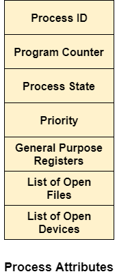

Attributes of a process
- The Attributes of the process are used by the Operating System to create the process control block (PCB) for each of them. This is also called context of the process. Attributes which are stored in the PCB are described below.
Process ID
- When a process is created, a unique id is assigned to the process which is used for unique identification of the process in the system.
Program counter
- A program counter stores the address of the last instruction of the process on which the process was suspended. The CPU uses this address when the execution of this process is resumed.
Process State
- The Process, from its creation to the completion, goes through various states which are new, ready, running and waiting. We will discuss about them later in detail.
Priority
- Every process has its own priority. The process with the highest priority among the processes gets the CPU first. This is also stored on the process control block.
General Purpose Registers
- Every process has its own set of registers which are used to hold the data which is generated during the execution of the process.
List of open files
- During the Execution, Every process uses some files which need to be present in the main memory. OS also maintains a list of open files in the PCB.
-
List of open devices
- OS also maintain the list of all open devices which are used during the execution of the process.
